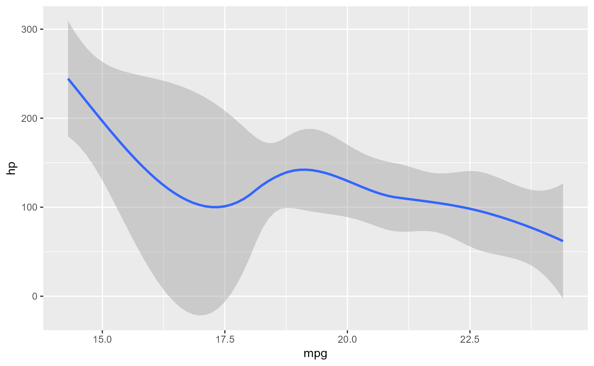
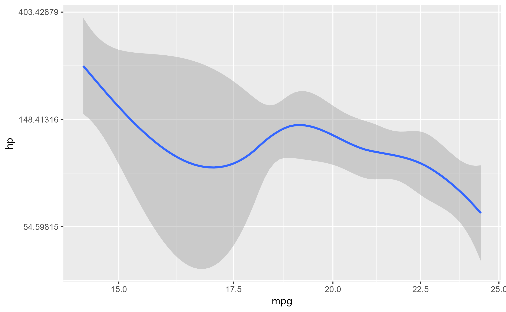

Inspect the value of variables from a method
Usage
ggtrace_inspect_vars(
x,
method,
cond = quote(._counter_ == 1L),
at = "all",
vars,
by_var = TRUE
)Arguments
- x
A ggplot object
- method
A function or a ggproto method. The ggproto method may be specified using any of the following forms:
ggproto$methodnamespace::ggproto$methodnamespace:::ggproto$method
- cond
When the return value should be inspected. Defaults to
quote(._counter_ == 1L).- at
Which steps in the method body the values of
varsshould be retrieved. Defaults to a special valueallwhich is evaluated to all steps in the method body.- vars
A character vector of variable names
- by_var
Boolean that controls the format of the output:
TRUE(default): returns a list of variables, with their values at each step. This also drops steps within a variable where the variable value has not changed from a previous step specified byat.FALSE: returns a list of steps, where each element holds the value ofvarsat each step ofat. Unchanged variable values are not dropped.
Tracing context
When quoted expressions are passed to the cond or value argument of
workflow functions (in the form of ggtrace_{action}_{value}()), they are
evaluated in a special environment which we call the "tracing context".
The tracing context is "data-masked" (see rlang::eval_tidy()), and exposes
an internal variable called ._counter_ (.data$._counter_) which tracks how
many times a function/method has been called by the ggplot object supplied to
the x argument of workflow functions. For example, cond = quote(._counter_ == 1)
is evaluated as TRUE when the method is called for the first time, and
this is the default value of cond for workflow functions that only return
one value (e.g., ggtrace_capture_fn()).
For highjack functions like ggtrace_highjack_return(), the value about to
be returned by the function/method can be accessed with returnValue() in the
value argument. By default, value is set to quote(returnValue()) which
simply evaluates to the return value, but directly computing on returnValue() to
derive a different return value for the function/method is also possible.
Examples
library(ggplot2)
p1 <- ggplot(mtcars[1:10,], aes(mpg, hp)) +
geom_smooth()
p1
#> `geom_smooth()` using method = 'loess' and formula 'y ~ x'

# The `data` variable is bound to two unique values in `compute_group` method:
ggtrace_inspect_vars(p1, StatSmooth$compute_group, vars = "data")
#> `geom_smooth()` using method = 'loess' and formula 'y ~ x'
#> $Step1
#> x y PANEL group
#> 1 21.0 110 1 -1
#> 2 21.0 110 1 -1
#> 3 22.8 93 1 -1
#> 4 21.4 110 1 -1
#> 5 18.7 175 1 -1
#> 6 18.1 105 1 -1
#> 7 14.3 245 1 -1
#> 8 24.4 62 1 -1
#> 9 22.8 95 1 -1
#> 10 19.2 123 1 -1
#>
#> $Step5
#> x y PANEL group weight
#> 1 21.0 110 1 -1 1
#> 2 21.0 110 1 -1 1
#> 3 22.8 93 1 -1 1
#> 4 21.4 110 1 -1 1
#> 5 18.7 175 1 -1 1
#> 6 18.1 105 1 -1 1
#> 7 14.3 245 1 -1 1
#> 8 24.4 62 1 -1 1
#> 9 22.8 95 1 -1 1
#> 10 19.2 123 1 -1 1
#>
# Note that elements of this list capture the method's state upon entering a step,
# so "Step1" and "Step5" should be interpreted as the value of `data` at the start
# the method's execution (before "Step1") and its value as a result of running Step4
# (before "Step5"). Indeed, we see that the `weight` column is defined in Step4, so
# the data is flagged as changed at the start of Step5
ggbody(StatSmooth$compute_group)[[4]]
#> if (is.null(data$weight)) data$weight <- 1
# Comparing the "Steps" themselves can be useful
p2 <- p1 +
scale_x_continuous(trans = "log") +
scale_y_continuous(trans = "log")
p2
#> `geom_smooth()` using method = 'loess' and formula 'y ~ x'

# Comparing the original plot to one with log-transformed scales reveals a change
# in data detected at the beginning of Step 14
names(ggtrace_inspect_vars(p1, ggplot2:::ggplot_build.ggplot, vars = "data"))
#> `geom_smooth()` using method = 'loess' and formula 'y ~ x'
#> [1] "Step9" "Step12" "Step13" "Step19" "Step30"
names(ggtrace_inspect_vars(p2, ggplot2:::ggplot_build.ggplot, vars = "data"))
#> `geom_smooth()` using method = 'loess' and formula 'y ~ x'
#> [1] "Step9" "Step12" "Step13" "Step14" "Step19" "Step30"
# We can pinpoint the calculation of scale transformations to Step 13:
ggbody(ggplot2:::ggplot_build.ggplot)[[13]]
#> data <- lapply(data, scales_transform_df, scales = scales)
# With `by_vars = FALSE`, elements of the returned list are steps instead of values.
# Note that this does not drop unchanged values:
ggtrace_inspect_vars(p1, StatSmooth$compute_group, vars = "data", at = 1:6, by_var = FALSE)
#> `geom_smooth()` using method = 'loess' and formula 'y ~ x'
#> $Step1
#> $Step1$data
#> x y PANEL group
#> 1 21.0 110 1 -1
#> 2 21.0 110 1 -1
#> 3 22.8 93 1 -1
#> 4 21.4 110 1 -1
#> 5 18.7 175 1 -1
#> 6 18.1 105 1 -1
#> 7 14.3 245 1 -1
#> 8 24.4 62 1 -1
#> 9 22.8 95 1 -1
#> 10 19.2 123 1 -1
#>
#>
#> $Step2
#> $Step2$data
#> x y PANEL group
#> 1 21.0 110 1 -1
#> 2 21.0 110 1 -1
#> 3 22.8 93 1 -1
#> 4 21.4 110 1 -1
#> 5 18.7 175 1 -1
#> 6 18.1 105 1 -1
#> 7 14.3 245 1 -1
#> 8 24.4 62 1 -1
#> 9 22.8 95 1 -1
#> 10 19.2 123 1 -1
#>
#>
#> $Step3
#> $Step3$data
#> x y PANEL group
#> 1 21.0 110 1 -1
#> 2 21.0 110 1 -1
#> 3 22.8 93 1 -1
#> 4 21.4 110 1 -1
#> 5 18.7 175 1 -1
#> 6 18.1 105 1 -1
#> 7 14.3 245 1 -1
#> 8 24.4 62 1 -1
#> 9 22.8 95 1 -1
#> 10 19.2 123 1 -1
#>
#>
#> $Step4
#> $Step4$data
#> x y PANEL group
#> 1 21.0 110 1 -1
#> 2 21.0 110 1 -1
#> 3 22.8 93 1 -1
#> 4 21.4 110 1 -1
#> 5 18.7 175 1 -1
#> 6 18.1 105 1 -1
#> 7 14.3 245 1 -1
#> 8 24.4 62 1 -1
#> 9 22.8 95 1 -1
#> 10 19.2 123 1 -1
#>
#>
#> $Step5
#> $Step5$data
#> x y PANEL group weight
#> 1 21.0 110 1 -1 1
#> 2 21.0 110 1 -1 1
#> 3 22.8 93 1 -1 1
#> 4 21.4 110 1 -1 1
#> 5 18.7 175 1 -1 1
#> 6 18.1 105 1 -1 1
#> 7 14.3 245 1 -1 1
#> 8 24.4 62 1 -1 1
#> 9 22.8 95 1 -1 1
#> 10 19.2 123 1 -1 1
#>
#>
#> $Step6
#> $Step6$data
#> x y PANEL group weight
#> 1 21.0 110 1 -1 1
#> 2 21.0 110 1 -1 1
#> 3 22.8 93 1 -1 1
#> 4 21.4 110 1 -1 1
#> 5 18.7 175 1 -1 1
#> 6 18.1 105 1 -1 1
#> 7 14.3 245 1 -1 1
#> 8 24.4 62 1 -1 1
#> 9 22.8 95 1 -1 1
#> 10 19.2 123 1 -1 1
#>
#>